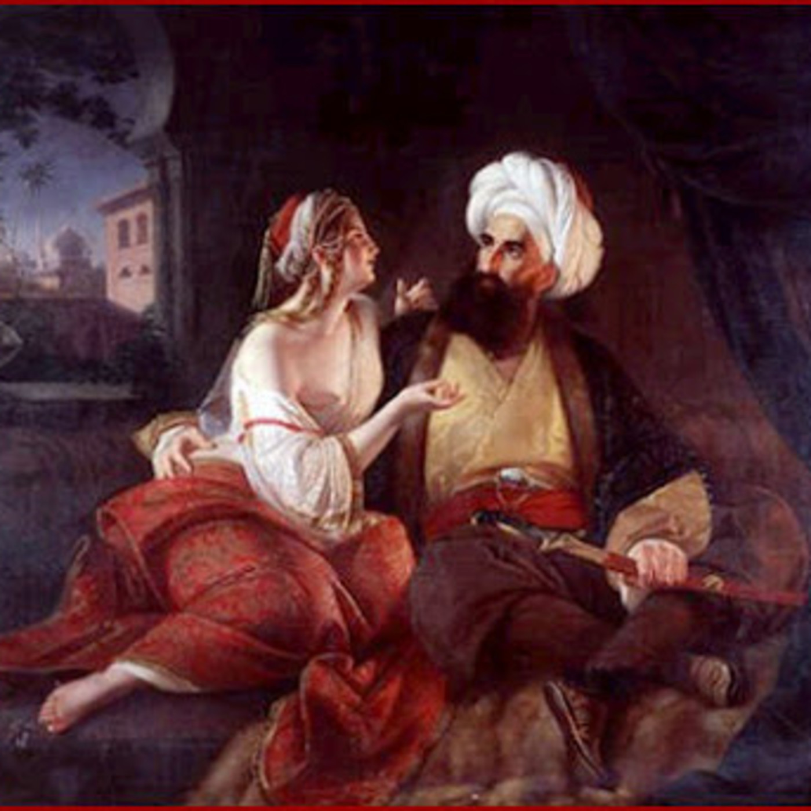
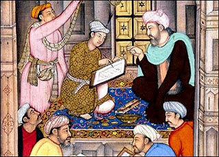
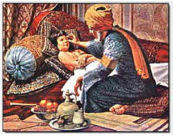

Las mil y una noches
Relato: «Historia del visir del rey Yunán y del médico Ruyán»

Ficha del relato
- Nombre original: ألف ليلة وليلة (Alf layla wa-layla)
- Nombre en español: Las mil y una noches
- Relato: Historia del visir del rey Yunán y del médico Ruyán
- Autoría: Anónima y colectiva (recopilación de cuentos populares)
- Época: Recopilación realizada entre los siglos VIII y XIV aproximadamente
- Origen: Medio Oriente
- Género: Cuento tradicional
- Idioma original: Árabe
Escucha la reseña
Conoce la historia del rey Yunán y el médico Ruyán narrada en audio.
Personajes principales
Rey Yunán
Es el gobernante de un reino que padece lepra. Después de ser curado por Ruyán, comienza a confiar en él, pero termina dejándose influenciar por su visir.
Médico Ruyán
Es un hombre sabio y experimentado que consigue curar al rey utilizando un tratamiento especial. A pesar de ayudarlo, termina siendo acusado injustamente.
El visir
Es el consejero del rey. Siente envidia del médico por la confianza y las recompensas que recibe, por lo que convence al monarca de desconfiar de él.
El pescador
Es quien cuenta la historia del rey Yunán y el médico Ruyán al efrit para explicarle las consecuencias de actuar injustamente.
El efrit
Es un genio que había sido liberado de una vasija por el pescador y que escucha atentamente el relato que este le cuenta.
Resumen
La historia comienza con el rey Yunán, un gobernante poderoso que padecía una enfermedad llamada lepra. A pesar de haber consultado a muchos médicos, ninguno conseguía encontrar una cura. Un día llegó a su reino un médico llamado Ruyán, quien aseguró que podía curarlo sin utilizar medicamentos para beber ni pomadas.
El médico preparó un tratamiento especial utilizando un mazo y una pelota. El rey practicó un juego siguiendo sus indicaciones, lo que permitió que el remedio hiciera efecto mediante el sudor. Después de bañarse, descubrió que su enfermedad había desaparecido. Muy agradecido, el rey comenzó a recompensar al médico con regalos y riquezas.
Sin embargo, uno de los visires del rey comenzó a sentir envidia por la confianza y los beneficios que recibía Ruyán. Por eso, empezó a convencer al monarca de que el médico podía ser un enemigo y que debía deshacerse de él. El rey terminó creyendo sus palabras y ordenó ejecutar al hombre que le había salvado la vida.
Antes de morir, Ruyán pidió que le entregaran un libro especial al rey. Después de su ejecución, el monarca intentó leerlo, pero las páginas estaban pegadas y tuvo que humedecer sus dedos para separarlas. El libro contenía un veneno que terminó provocando su muerte. Así, el rey sufrió las consecuencias de haber desconfiado de quien lo había ayudado.
Aviso: este resumen revela el final del relato.
3 enseñanzas del relato
- No debemos dejarnos llevar por la envidia. El visir siente celos de los beneficios que recibe el médico y busca perjudicar a una persona que solamente quería ayudar.
- Debemos pensar antes de tomar decisiones. El rey confía demasiado en las palabras de su consejero y no comprueba si sus acusaciones son verdaderas. Esto le provoca consecuencias muy graves.
- Debemos agradecer a quienes nos ayudan. El médico Ruyán consigue salvar al rey de una enfermedad que nadie podía curar. Sin embargo, el monarca olvida lo que hizo por él y termina tratándolo injustamente.
Ilustraciones del relato



Dónde conseguir el libro
- Leer gratis (texto en español): Biblioteca Digital del ILCE
- Otra versión digital: Proyecto Gutenberg - Las mil noches y una noche